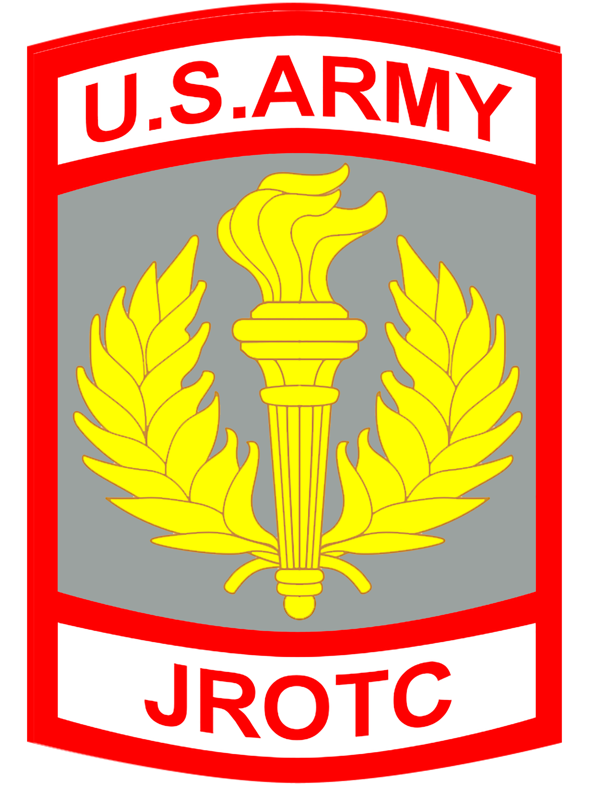
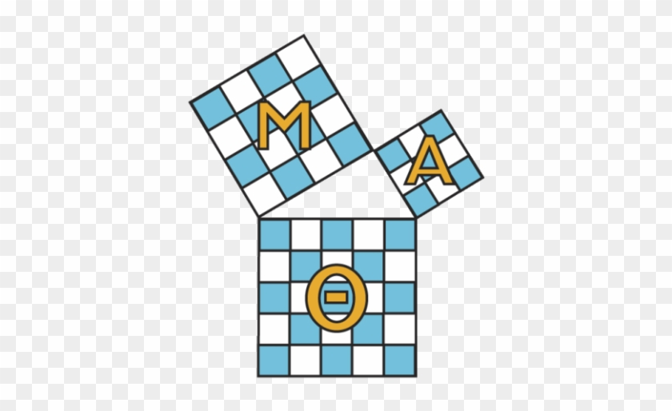
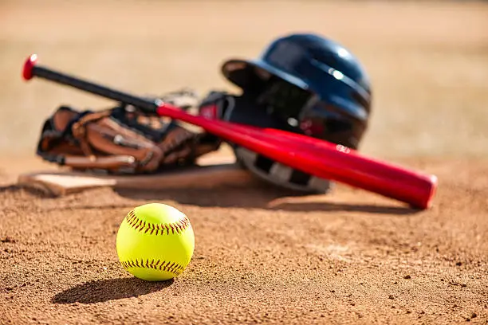
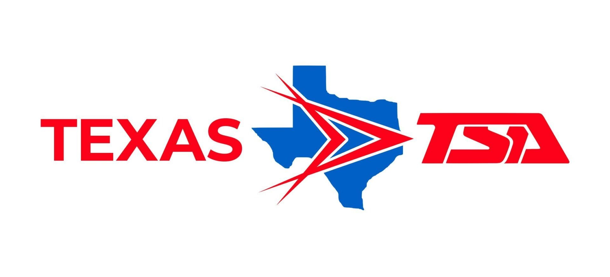

Aldine Esports
Play a variety of games competitively and scholarship opportunities.
Aldine Votes
Encourages students to become informed and engaged citizens by promoting civic awareness, voter education, and community involvement.
.jpg)
Art Club
Come and create art for fun and compete in competitions for scholarship.
Band
Play music and perform in concerts and competitions. There's jazz and orchestra.

Baseball
Provides students with opportunities to compete in tournaments and get scouted for D1 baseball.
Basketball
Provides students with opportunities to compete in tournaments and get scouted for D1 baseball.

Book Club
Read books and discuss them with other students.
Business Professional Association (BPA)
Provides students with opportunities to develop leadership, communication, and business skills through competitive events and community service.

Cheerleading
Allows students to participate in competitive basketball while building teamwork, coordination, and sportsmanship.

Chess Club
Come and play chess for fun, or learn how to play. There's also competitions for those who are interested.

Choir
Supports school athletics by promoting school spirit through performances, teamwork, and physical conditioning.

Color Guard
Brings students together to develop vocal skills, musical understanding, and performance experience through group singing.

Debate
Combines movement and performance to support school events while developing coordination, discipline, and teamwork.
Decathlon
Challenges students academically through team-based competitions that test knowledge across multiple subjects, including math, science, literature, and social studies.
FFA
Engages students in agricultural and environmental education through hands-on learning and community service.

Football
Offers students the chance to compete in football while developing strength, teamwork, and leadership skills.

Gamer's Club
Play video games and board games with friend for fun.
Golf
Provides students with opportunities to learn and compete in golf while building focus, discipline, and sportsmanship.
Health Occupation Students of America(HOSSA)
Provides students with opportunities to learn and compete in golf while building focus, discipline, and sportsmanship.

JROTC
Develops leadership, discipline, and citizenship through structured training, teamwork, and community service.

Mu Alpha Theta
Gain community hours and help students with math or science subjects. Assitance is also provided in college.
National Honor Society (NHS)
Help your community by volunteering and participating in service projects.
National Hispanic Society
Participate in cultural events and community service projects.

Powerlifting
Develops leadership, discipline, and citizenship through structured training, teamwork, and community service.

Soccer
Allows students to participate in competitive soccer while developing teamwork, endurance, and athletic skills.

Softball
Allows students to participate in competitive soccer while developing teamwork, endurance, and athletic skills.

Student Council (Seniors Only)
Student Representatives tasked with school-wide student engagement and activities

Swimming
Encourages physical fitness and competitive swimming through structured practices and meets.

Technology Student Association (TSA)
Engages students in STEM through competitive events, teamwork, and real-world problem solving.

Tennis
Offers students the opportunity to compete in tennis while developing coordination, focus, and sportsmanship.

Theatre
Allows students to explore acting, stage production, and performance while building creativity and confidence.

Track and Field
Provides students with opportunities to compete in running, jumping, and throwing events while building endurance and discipline.

Volleyball
Allows students to participate in competitive volleyball while developing teamwork, coordination, and athletic skills.

Water Polo
Combines swimming and team strategy to offer students a competitive and physically demanding sport.